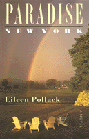

<body bgcolor="#FFFFFF" text="#000000" link="#0000FF" vlink="#CC0000" alink="#CC0000"><center><hr width="350" size="1" align="center" noshade>A funny and moving first novel of nostalgia for Catskills hotel life<hr width="350" size="1" align="center" noshade><p><a href="https://cdcshoppingcart.uchicago.edu/Cart/ChicagoBook.aspx?ISBN=9781566396578&&PRESS=temple" target="_top">Buy this book!</a> | <a href="https://cdcshoppingcart.uchicago.edu/Cart/Cart.aspx?PRESS=temple" target="_top">View Cart</a> | <a href="https://cdcshoppingcart.uchicago.edu/Cart/Cart.aspx?PRESS=temple" target="_top">Check Out</a></p><p></p></center><!--none//--><h1>Paradise, New York</h1>
<H2>A Novel</H2>
<h3>Eileen Pollack</h3>
<P>cloth 1-56639-657-3 $69.50, Jul 99, <FONT COLOR=#990033>Out of Stock Unavailable</FONT>
<br>paper 1-56639-789-8 $26.95, Apr 00, <FONT COLOR=#990033>Available</FONT>
<br>Electronic Book 1-43990-403-0 $26.95 <FONT COLOR=#990033>Out of Stock Unavailable</FONT>
<BR> 288 pp
5x9
<BR>&nbsp;<br>Restricted: U.S. and Canada
</P><h3 align="center"><P><font color="#996633">Philadelphia Book Clinic Certificate of Award,
1999</font></P>
</H3>
<BLOCKQUOTE><I>"From the author of the story collection </I>The Rabbi in the Attic<I> (1991), a finely crafted&#133first novel detailing the journey to wisdom of a young woman who grew up in a Borscht Belt hotel."</I>
<BR>&#151<B><I>Kirkus Reviews</I></B><I></I></BLOCKQUOTE>
<P>We first meet Lucy Appelbaum, the heroine of <I>Paradise, New York</I>, in 1970, as a nine-year-old girl enjoying her family's Catskills hotel, the Garden of Eden. Ten years later, having found nothing else at which she can distinguish herself, Lucy tries to save the Eden by capitalizing on a wave of nostalgia for the Borscht Belt and running the hotel as a sort of living museum of Yiddish culture.
<P>In the course of the season, Lucy battles her grandmother's attempts to sabotage Lucy's success, her parents' superstitious fears of anything that attracts attention to the Jews, and her brother's contention that what Lucy is doing is more a matter of ego than authentic religious feeling.
<P><I>Paradise, New York</I> explores the comforts and complexities of American ethnic identity with a charming commitment to laughter and love.
<BR>&nbsp;<h2>Excerpt</h2><P>Excerpt available at <a href="http://www.temple.edu/tempress">www.temple.edu/tempress</a></p>
<BR>&nbsp;<h2>Reviews</h2>
<P><I>"...a stark and precise depiction of the psychological and cultural states of American Jewry, a narrative challenge that Pollack meets with legend, parable, sociology, history and old-fashioned storytelling."</I>
<BR>&#151<B><I><a href="../reviews/1457_review.html">Washington Post Book World</a></I></B>
<P><I>"Pollack's first novel succeeds...in taking on such large themes as racism and bigotry, love and loyalty&#133."</I>
<BR>&#151<B><I>The New York Times Book Review</I></B>
<P><I>"This first novel of 'the last Catskills resort' nearly bursts off the page. Eileen Pollack's characters crack wise, work hard, make loving trouble for one another, and then, as soon as they've got us laughing, they move on and break hearts. Eileen Pollack is a marvelous writer; and </I>Paradise, New York<I> is a sharply observed and poignant novel about the dangers of nostalgia and the willfulness of time."</I>
<BR>&#151<B>Marcie Hershman</B>, author of <I>Safe in America</I>
<BR>&nbsp;<H2>About the Author(s)</H2>
<table><tr><td valign="top"><img src="/tempress/authors/1457_au.gif" height="90" width="75"></td><td width="100%" valign="middle"><p><B>Eileen Pollack</B> is best known for her collection of short fiction, <I>The Rabbi in the Attic and Other Stories</I>. She is currently Assistant Professor, Master of Fine Arts Program, at the University of Michigan.</P></td></tr></table>
<BR><H2>Subject Categories</H2>
<p><A HREF="/tempress/literature.html" TARGET="_top">Literature and Drama</a>
<BR><A HREF="/tempress/jewish.html" TARGET="_top">Jewish Studies</a>
<BR><A HREF="/tempress/general.html" TARGET="_top">General Interest</a>
</p>
<p align="center"><a href="https://cdcshoppingcart.uchicago.edu/Cart/ChicagoBook.aspx?ISBN=9781566396578&&PRESS=temple" target="_top">Buy this book!</a> | <a href="https://cdcshoppingcart.uchicago.edu/Cart/Cart.aspx?PRESS=temple" target="_top">View Cart</a> | <a href="https://cdcshoppingcart.uchicago.edu/Cart/Cart.aspx?PRESS=temple" target="_top">Check Out</a></p><p><font face="Arial" size="1"><a href="copyright.html" onMouseOver="window.status='Web Copyright Policy';return true;" onMouseOut="window.status=''" title="Web Copyright Policy">&copy;</a> 2015 <a href="http://www.temple.edu" target="new" onMouseOver="window.status='Link to Temple University home page';return true;" onMouseOut="window.status=''" title="Link to Temple University home page">Temple University</a>. All Rights Reserved. http://www.temple.edu/tempress/titles/1457_reg.html</font></p>